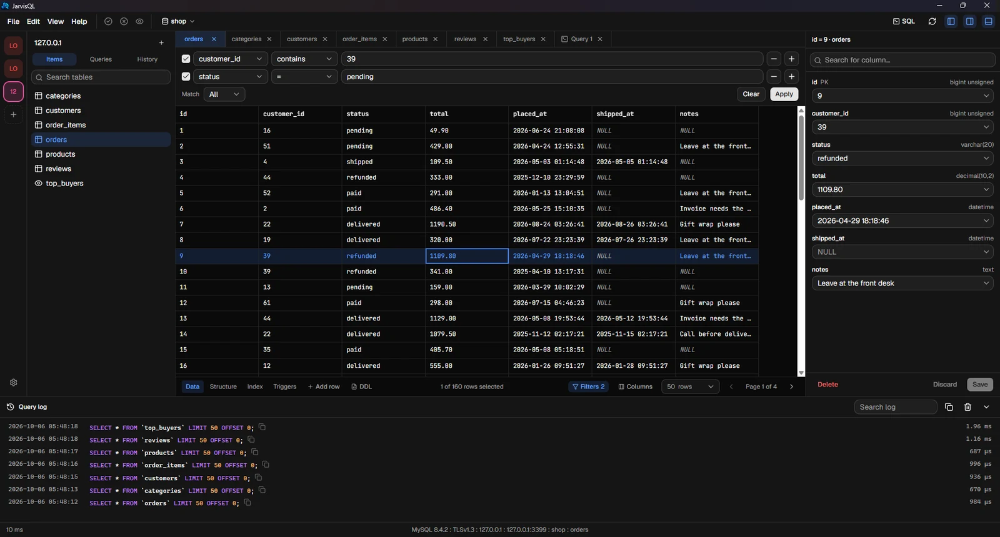
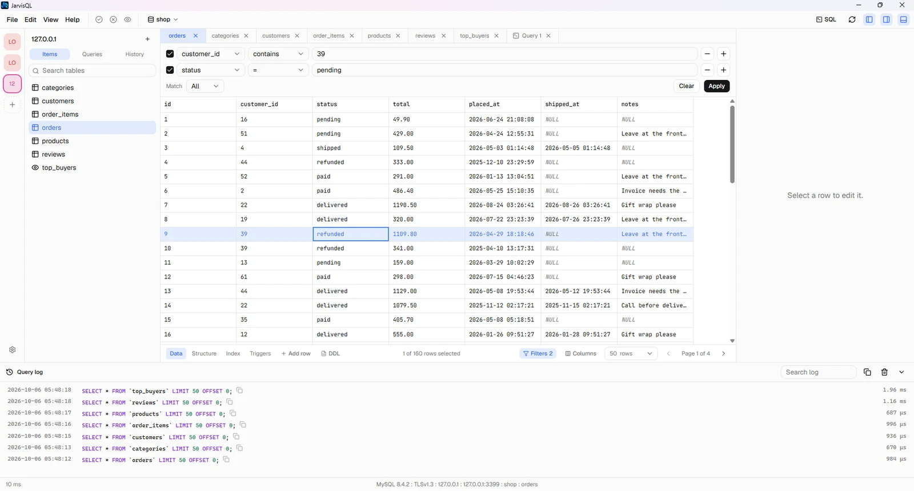

Local and remote
Open a file on your computer, a MySQL server, or a database on a server over SSH. Tunnels and host key checks included.
Latest release
SQLite and MySQL, on your computer or on a server over SSH. A small installer, no account and no analytics.
Windows, macOS and Linux

Built for the daily work: browse, edit, query, import, export.
Open a file on your computer, a MySQL server, or a database on a server over SSH. Tunnels and host key checks included.
Edits are collected first. See every change as SQL, then commit or discard them all at once.
Imports and exports stream in chunks, show progress and can be cancelled. CSV, JSON and SQL.
Autocomplete for tables and columns, query tabs, saved queries, history and a log with timings.
No account, no analytics. Passwords live in your system keychain, never in a file.
New versions are found and installed for you. The installer is only about 5 MB.
Pick the look you like. Fonts and sizes are yours to set, too.

More are on the way.
Free to download.
The installers are not code-signed yet, so your system may ask you to confirm the first launch. On Windows click More info, then Run anyway. On macOS right-click the app, choose Open, then Open again.